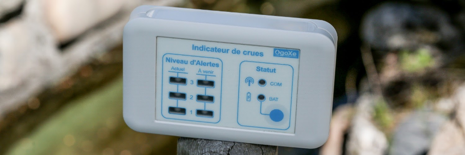
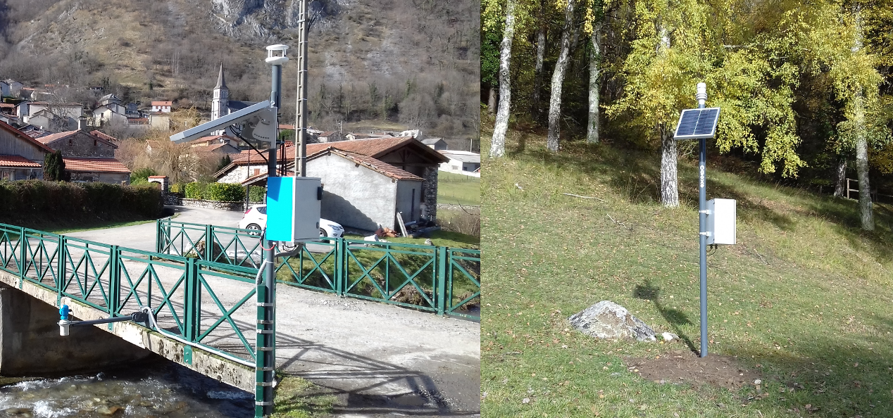
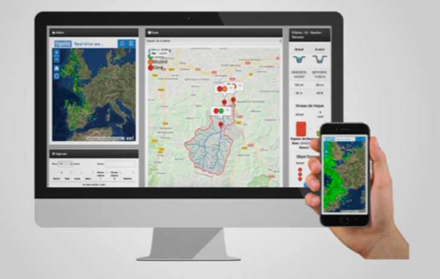
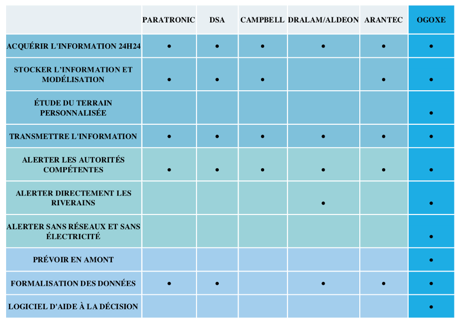

Présentation d'Ogoxe
Description
Ogoxe développe un système d’alerte et de prévision des crues via des objets connectés. L’objectif est de pouvoir informer la population du niveau de danger d’un cours d’eau même lorsque les réseaux Internet, téléphone et électrique sont coupés.
Histoire
OgoXe est une startup née suite aux inondations de 2013 dans les Hautes-Pyrénées, qui ont frappé la vallée du Bastan entraînant plusieurs morts et d’importants dégâts matériels. Depuis OGOXE est spécialisé dans les études environnementales, l’assistance et les solutions innovantes pour répondre, anticiper et alerter sur les risques et dangers environnementaux. Nos systèmes sont résilients et autonomes face à n’importe quel risque.
Caractéristiques
| Finalité |
Prevenir les innondations des rivières aux particuliers, collectivités et entreprises |
| Objectif |
Etudier les signaux maritimes |
| Activité |
Surveiller le niveau des rivières |
| Domaine d'activité |
Commerciale |
| Nationalité |
Française |
| Champs d'actions |
nationale |
| Taille |
TPE |
| Ressources humaines |
6 employés à l'année |
Les parties prenantes
(tableau ou organigramme)
Modèle économique
Présentation des produits
Floodix
L'objet connecté Floodix permet de recevoir les différents niveaux de danger en temps réel ou à venir sur son lieu d'installation. Il s'adapte à tout type d'utilisateurs : particuliers, industries, collectivités, tertiaire et agriculture.
Couplé à différents types de capteurs disséminés sur les lieux à risque, Floodix centralise les données du terrain et permet de donner l'alerte des dangers d'inondation. Il est totalement autonome en énergie, fonctionne 24h/24 et sans interruption, même en cas de catastrophe météorologique et climatique qui aurait pour conséquence un arrêt des signaux télécoms ou des pannes d'électricité.

Les balises
Les balises sont équipées de capteurs connectés afin de suivre des paramètres environnementaux, comme le niveau des cours d'eau.
Autonome en énergie, les balises sont résilientes comme Floodix, c'est-à-dire qu'elles fonctionnent 24h/24 et sans interruption, même lors d'un événement climatique qui peut couper les réseaux télécoms et électriques.

Ometrix
Plateforme logicielle chargée de communiquer les informations d'un territoire en temps réel. Ometrix retranscrit les données collectées par les devices Ogoxe déployés sur le terrain, ainsi que les données publiques météorologiques et hydrologiques.
Cette application web est un outil d'aide à la décision sur la gestion de la crise lors de catastrophes naturelles. Elle permet aux décisionnaires d'alerter les personnes concernées en temps réel grâce aux réseaux sociaux, ou par SMS et appel, mais aussi via les objets connectés Floodix.

Présentation des services
En plus de la solution IFAFS, Ogoxe propose une large gamme de services à ses clients :
- Etudes hydrologiques : études permettant de mieux appréhender le fonctionnement des cours d'eau et les caractéristiques du bassin versant
- Bathymétrie : informations précises et modélisation des fonds de cours d'eau sous forme de représentations 3D
- Carte de zones inondables : cartes réalisées à partir d'études hydrogéomorphologiques. Ces cartes sont utilisées comme outils d'étude préliminaire et sont indispensables dans le cadre de la mise en place d'un PPRI (Plan de Prévention du Risque d'Inondation) par les collectivités ainsi que lors de diagnostics environnementaux préalables à l'aménagement d'une zone d'intérêt économique et écologique
- Modélisation hydrologique : outil utilisé systématiquement lors de la mise en place ou modification d'ouvrages hydrauliques
- Mise à disposition de capteurs : Ogoxe propose des capteurs (vitesse du vent, stations météo, ...) aux collectivités qui ne seraient pas déjà équipées.
Présentation des dépenses
Ogoxe lève aujourd'hui 500 000€ (dont 250k€ en equity) afin de :
- Déployer la solution à l'échelle nationale, d'abord en Région Occitanie puis dans les régions SUD-PACA, Rhônes-Alpes, Ile-de-France et le Massif Central
- Commencer la commercialisation en Espagne et en Italie car ces pays sont soumis à un fort risque environnemental
- Poser les bases d'une diversification de ses solutions afin de devenir le guichet unique pour les risques naturels et environnementaux.
La rentabilité atteinte en 2022 permettra ensuite à Ogoxe de financer son internationalisation à plus grande échelle (notamment dans les pays de l'Est) ainsi que financer le développement et la commercialisation de nouvelles solutions : risques d'incendie par exemple.
Présentation des recettes
La solution est commercialisée depuis 2017 et a permis à Ogoxe d'engranger environ 400k€ de chiffre d'affaires pour 39 contrats signés depuis son lancement avec notamment des clients grands groupes tels que EDF.
- En 2021, Ogoxe a signé un nouveau contrat de 600k€ pour un déploiement dans l'ouest de la France. Ce chiffre d'affaires se répartit en 300k€ en 2021 et 300k€ en 2022.
Modèle adopté
Initialement Ogoxe était sur un modèle de vente de capteur et de contrats de maintenance annuels. Ce modèle n'était pas optimal, c'est pourquoi en 2020/2021, le fondateur d'Ogoxe entame une transition vers un modèle d'abonnement. Au cours des derniers mois, le fondateur a passé beaucoup de temps sur le terrain afin de calibrer au mieux cette nouvelle offre, tant sur la proposition de valeur que sur le pricing. A la lumière des remontées terrain, Ogoxe a affiné son pricing et commencé la commercialisation de cette nouvelle offre à un certain nombre de nouveaux clients.
Le modèle économique est le suivant :
- Des frais d'installation (Setup fee) : de 100 à 1 000€ ;
- Un abonnement : de 0,99€ à 39,9€/mois.
Ce nouveau modèle économique est plus efficient pour plusieurs raisons :
- Récurrence et une meilleure marge globale par client ;
- Réduction du cycle de vente client : de 8 mois à 2 mois ;
- Moins de friction sur les renouvellements de contrats ;
- Solution clé en main : plus simple à gérer pour les clients ;
- Possibilité de mettre plusieurs clients par capteurs. Le modèle devient de plus en plus rentable à mesure qu'il y a de clients sur le même périmétre autour des capteurs ;
- Possibilité d'utiliser la donnée puisque Ogoxe reste propriétaire des capteurs.
Etude de la chaine de valeur
Les activités principales
- Le développement/conception : Ogoxe développe et déploie une solution complète et intégrée pour protéger la population contre les risques naturels, à commencer par celui des inondations.
Cette solution, appelée IFAFS (pour IoT Flood Alert and Forecasting Solution - Solution connectée d'alerte et de prévention des crues), repose sur la combinaison de :
- Capteurs connectés disséminés sur les territoires à risque
- L'agrégation de données publiques (météo, vigicrues, ...)
- Un logiciel d'information et d'aide à la prise de décision
- Boîtier Floodix, objet connecté pour informer, alerter et prévenir en toute situation.
- La commercialisation : La solution est commercialisée depuis 2017 et a permis à Ogoxe d'engranger environ 400k€ de chiffre d'affaires pour 39 contrats signés depuis son lancement. Parmi les adopteurs de la solution se trouvent des collectivités, des campings, des particuliers, des entreprises et grands groupes tels que EDF (barrage et centrales hydro), potentiel partenaire pour sa commercialisation.
- La vente et le marketing : Ogoxe adresse ses offres à la fois aux collectivités, aux particuliers(BtoB) et aux entreprises(BtoC).
- Services : Ogoxe met à disposition de ces clients une solution complète permettant la prévention et l’alerte des risques d'inondation. Ses solutions connectées et intelligentes permettent d'identifier, prévenir et alerter les populations des risques, et ce même en cas de coupure des réseaux électriques et télécoms.
Les activités secondaires
- Les infrastructures de l’entreprise : ce sont les services essentiels (administratif, comptable, contrôle de gestion, financier…),
- Les ressources humaines : c’est le service qui assure la gestion du personnel et sa coordination,
- La recherche et le développement : ce sont des services qui mobilisent un certain savoir-faire et une capacité à innover,
- Les achats : c’est le processus qui permet à l’entreprise d’acquérir les ressources nécessaires pour produire.
Outils de diagnostic externes et internes:
Analyse des forces concurrentielles
Ces acteurs proposent des capteurs et des solutions de prévisions, dans un modèle proche de celui d'Ogoxe :
- Arantec (Espagne)
- DHI (Danemark)
- DSA (France)
- OTT Hydromet (Allemagne/France)
- Paratonic (France)
Ces acteurs proposent une base de services similaires à Ogoxe comme le traitement de l'information (acquisition, stockage et transmission). Cependant la vraie valeur ajoutée par Ogoxe en matière de services réside dans l'exploitation de ces données et sa technologie. En effet, d'une part, la société est capable de traiter, recouper et transmettre ces données de façon à proposer des outils de prévision des catastrophes naturelles et d'aide à la décision sur le terrain. D'autre part, le développement technologique entrepris par la société lui permet de proposer des fonctionnalités clés, qu'Ogoxe est seule à proposer comme la capacité d'alertes sans réseaux et sans électricité.
Parmi ces acteurs, aucun n'est en capacité de gérer l'ensemble des étapes du risque d'inondation, c'est-à-dire avant, pendant et après, à l'instar d'Ogoxe. Peu également s'adressent conjointement à tous les acteurs concernés : les collectivités publiques, les entreprises et les particuliers, comme le propose Ogoxe.

Analyse PESTEL
Politique
- Le système de communication et de prévention fait perdre beaucoup de temps aux autorités. En effet, il est souvent trop tard pour prévenir les risques de façon efficace. D’autant plus que Vigicrue ne couvre pas tout le territoire. Aujourd’hui, seulement 1 cours d’eau sur 5 est surveillé en France.
- Initiative GreenTech en France et Europe
Economique
- L'etat accorde des subventions aux entreprises impliqué dans l'économie verte
- Crowfunding sur le site Sowefund pour permettre aux internautes de soutenir la startup
Socioculturel
- Concurrence en tous points inférieure en terme de qualité de produits et de services
Technologique
- Technologie haut des gammes des capteurs de surveillance
- Seul acteur capable d'alerter les risques d'inondation en temps réel, sans interruption, et ce malgré l'absence de signaux télécoms ou d'électricité
Ecologie
- modèles météorologiques pas toujours fiables, ce qui rend la prévention d’autant plus complexe.
- Les crues restent donc des phénomènes relativement durs à anticiper du fait aussi de la complexité des facteurs qu’elles impliquent : précipitations, absorption des sols, humidité ou forme et géométrie de la rivière
Legal
- Une nouvelle loi portant sur la Gestion des milieux aquatiques et prévention des inondations indique que les autorités locales peuvent faire appel à leur budget général et/ou prélever une taxe supplémentaire pour financer la prévention des inondations.
Sitographie